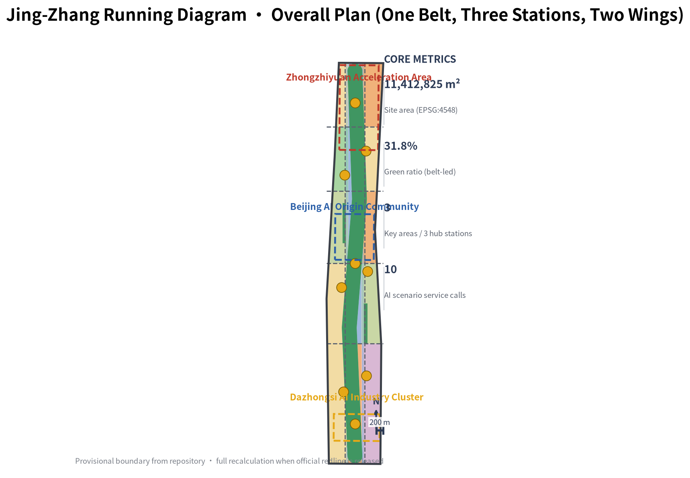
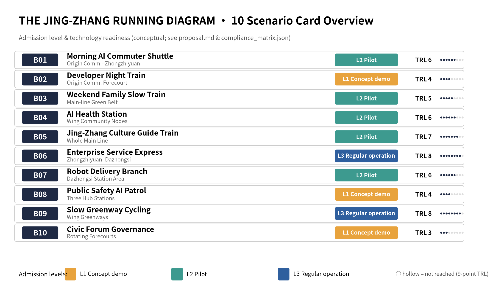

One Belt · Main Running Line Green Belt
Conceptual green corridor about 360 m wide: parkland + platform walkways + public-space nodes, linking the three hub stations north-south.
Offline electronic exhibit. Authoritative data remains in GeoJSON, metrics.json, matrices and self-check results; this page translates the overview map, one-belt-three-stations-two-wings structure, three key areas (three hub stations), ten service-call cards (AI scenarios), core metrics, task coverage, sources and assumptions into a human-readable visual narrative.
The overview map places the main running line green belt, three hub stations, two wings, platform walkways and public-space nodes in one evidence map, with the blue-green public space base map overlaid (from geometry/*.geojson and metrics.json).

One main running line (Heritage Park Vitality Belt) runs north-south; three hub stations correspond to the three key areas; two wing branches deliver capital, IP, scenarios and life services; land-use zones follow the running-diagram cross-section grammar and fully cover the submitted boundary.
Conceptual green corridor about 360 m wide: parkland + platform walkways + public-space nodes, linking the three hub stations north-south.
Engine Station (Zhongzhiyuan) for full-stack autonomy; Origin Station (AI Origin Community) for start-up ecosystems; Hub Station (Dazhongsi) for AI-native formats.
East Wing · Zhongguancun Technology-Service Wing (global factor allocation); West Wing · Xiaoyuehe Scenario-Empowerment Wing (AI scenarios and vibrant city).
Coordinated research area (43.6 km², global network) → overall design area (11.4 km², main line, submitted boundary) → key detailed design area (368.4 ha, three hub-station yards); renewal projects are phased near/mid/long term.
Global network: AI industry chain, talent flow, compute and data flows, future-city-form research.
Main line: land-use zones and spatial structure of the green belt, three hub stations and two wings (regulatory depth).
Station yards: function, building scale, retain/renovate/demolish, public space and traffic organization.
Forecourts and walkways of the three hub stations; Origin Community founder district; Dazhongsi AI-native pilot.
Wing activation: enterprise-service express nodes; Xiaoyuehe community parks and health stations; Zhongzhiyuan test-ground phase I.
Periphery renewal upgrade; belt-wide character enhancement; routine operation of the annual running diagram.
Each key area is designed as positioning + spatial structure + building renewal + traffic/slow mobility + public space + AI scenarios + implementation risk.
Source of the AI full-stack autonomous innovation system; full-stack innovation loop: basic research—engineering—test/validation—accelerator; edge-compute & data-sandbox test ground T3; Engine Tower conceptual landmark.
First stop for AI talent and founders; small-block founder district; 0 km Milestone conceptual landmark; morning commuter shuttle B01 and developer night train B02.
Interchange node of AI-native new formats; AI consumption street + business towers + exhibition hall; Signal-Light Plaza conceptual landmark; robot delivery branch B07.
Each scenario is a scheduled service: explicit line (location), time (operation rhythm), dispatcher (operating body) and passengers (service targets).
Origin—Zhongzhiyuan; commuting developers; ai-traffic-walkability
Origin forecourt; developers & students; enterprise-service-copilot
Main line green belt; residents & families; ai-traffic-walkability
Wing community nodes; residents & seniors; ai-health-service-navigation
Whole main line; visitors & citizens; ai-cultural-guide
Zhongzhiyuan—Dazhongsi; SMEs & founders; enterprise-service-copilot
Around Dazhongsi; merchants & consumers; robot-delivery-low-speed
Around hub stations; public; public-safety-operations-review
Wing greenways; cyclists & commuters; ai-traffic-walkability
Rotating forecourts; citizens/developers/managers; governance
Three node-level designs per key area (9 total, conceptual, confidence=low) ready for professional deepening; scenario admission-level overview (L1/L2/L3 × TRL) and the Logo VI vector master ship with the package.
N-Z01 Engine Tower loop core; N-Z02 Data Sandbox Test Ground (T3); N-Z03 5th-Ring green wedge.
N-O01 0 km Milestone Plaza (B02/B10); N-O02 Founders' Living-Room Street (B06); N-O03 First-Train Connector (B01).
N-D01 Signal-Light Plaza (B10); N-D02 AI-Native Consumption Street (B07); N-D03 Hub Complex · AI Exhibition Hall (B06/B08).

compliance_matrix.json covers announcement tasks 1.3/1.4/1.5 and agent.1–agent.6; standard_matrix.json covers the five mandatory standards; all fifteen design-depth items are complete in design_depth_matrix.json.
Sources in sources.json (10 records: 7 formal-ready, 2 provisional_only, 1 navigation layer) and standards/references snapshots; pending regulatory, redline, ownership and engineering conditions are registered in assumptions.json (9 records with recalculation triggers). This page loads no CDN, remote tiles, external scripts, external fonts or iframes.
Deterministic validation, bilingual packaging, spatial review, visual packaging check and professional evidence review must all pass (self_check.json).